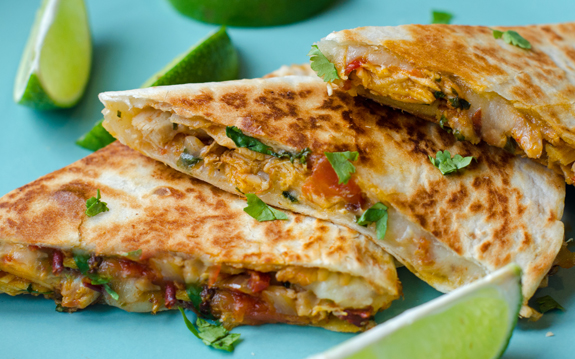

Cooking Quesadillas
A quick, & tasty solution to your hunger!
Quesadillas are not only simple to make, but are also very customizable making them the perfect meal for any occasion.

How to Make a Quesadilla
What you will need..
To make a basic quesadilla you will need to gather the following
tools and ingredients:
- (2) Tortillas
- Cheese
- Butter
- Stovetop
- Pan (big enough for a tortilla)
- Spatula
- Butter knife
You may use any type of cheese but I have found that a Mexican-style
cheese blend tastes the best.
How to prepare your masterpiece...
Quesadillas are quite easy to make. By following these steps
you may cook your own piece of heaven.
- Place pan on stovetop and heat on medium-low heat.
- Take 2 tortillas and lightly butter each on one side.
- Place 1 tortilla - butter side down - onto the pan.
- Sprinkle cheese onto cooking tortilla.
- Place last tortilla - butter side up - onto cheese.
- Flip the quesadilla when the bottom has cooked to your liking.
How to Make Your Quesadilla More Exciting Than This Page
By adding any of the following ingredients to your quesadilla, you can turn a class cheese dish into a meal to remember!